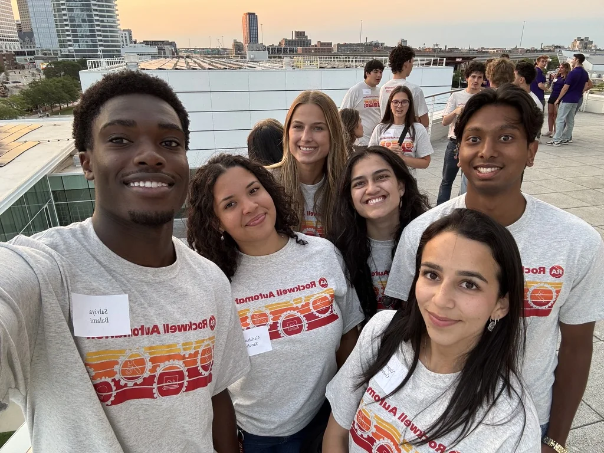
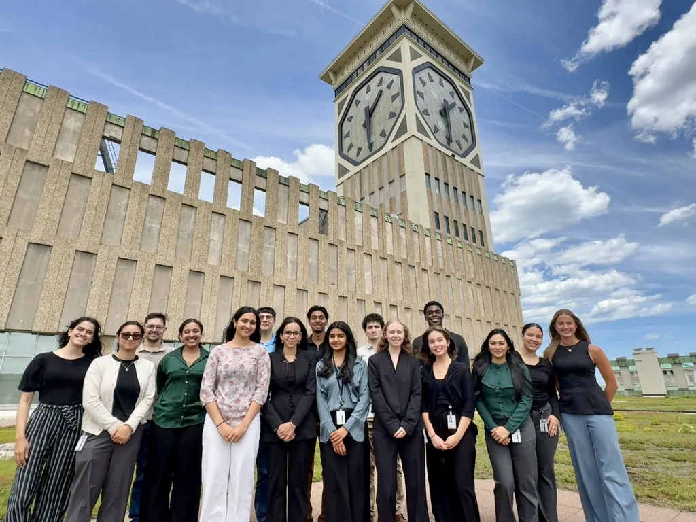
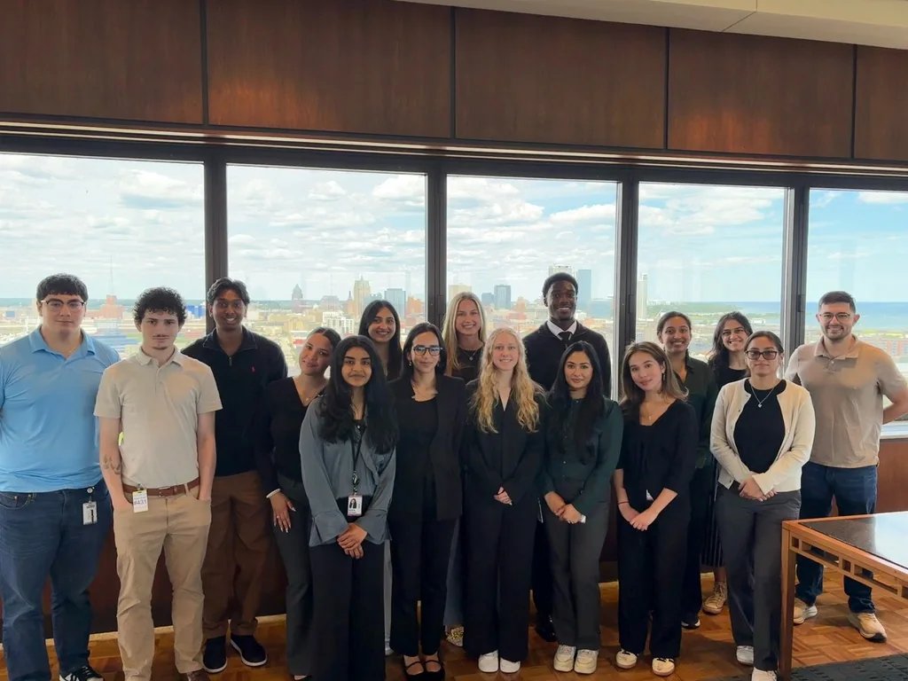

What I worked on
- Terraform drift detection. Automated comparisons between infrastructure-as-code and deployed Azure resources across 40+ cloud environments, while filtering execution failures and non-actionable differences.
- Actionable remediation. Connected real drift findings to GitHub-based workflows that turn discrepancies into issues and remediation pull requests, reducing manual investigation for cloud engineers.
- AI Innovation Tiger Team. Worked on a 30+ member cross-functional team evaluating multi-agent architectures for retrieving and analyzing engineering designs, documenting tradeoffs, and demonstrating MVPs to stakeholders.
TerraformAzureGitHub ActionsAgentic Workflows